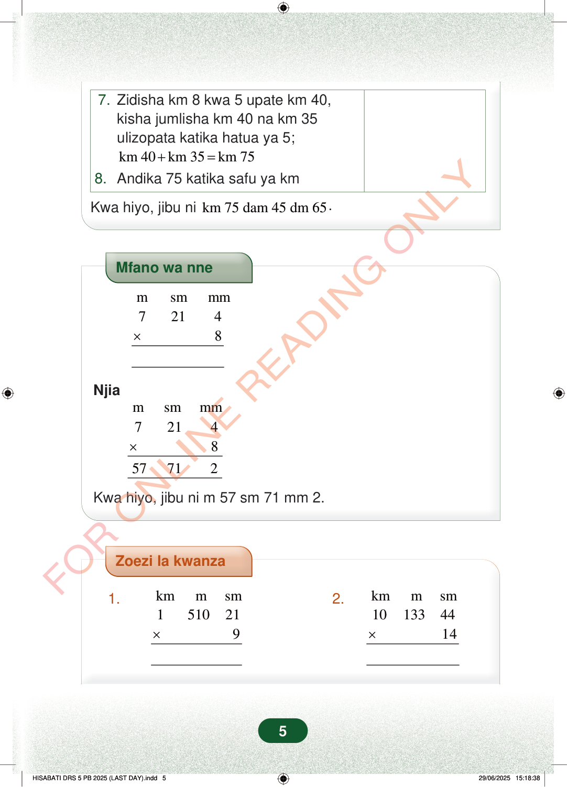

7.Zidisha km 8 kwa 5 upate km 40,kisha jumlisha km 40 na km 35ulizopata katika hatua ya 5;km 40km 35km 75+=8.Andika 75 katika safu ya kmKwa hiyo, jibu nikm 75 dam 45 dm 65.Mfano wa nnemsmmm72148×Njiamsmmm7214857712×Kwa hiyo, jibu ni m 57 sm 71 mm 2.Zoezi la kwanza1.kmmsm1510219×2.kmmsm101334414×5
7. Zidisha km 8 kwa 5 upate km 40, kisha jumlisha km 40 na km 35 ulizopata katika hatua ya 5;
km 40 km 35 km 75 + = 8. Andika 75 katika safu ya km
Kwa hiyo, jibu ni km 75 dam 45 dm 65 .
Mfano wa nne
m sm mm 7 21 4 8 ×
Njia
m sm mm 7 21 4 8 57 71 2 ×
Kwa hiyo, jibu ni m 57 sm 71 mm 2.
Zoezi la kwanza
1. km m sm 1 510 21 9 ×
2. km m sm 10 133 44 14 ×
5
Hatua za mwisho za mfano zinaonyesha kuongeza km 40 na km 35 kupata km 75. Jibu la mwisho ni km 75 na dm 45 na cm 65.7. Zidisha km 8 kwa 5 upate km 40,kisha jumlisha km 40 na km 35 ulizopata katika hatua ya 5;km 40 + km 35 = km 758. Andika 75 katika safu ya kmKwa hiyo, jibu ni km 75 dam 45 dm 65.Mfano wa nne unaonyesha 7 m 21 sm 4 mm ikizidishwa kwa 8. Jibu ni m 57 sm 71 mm 2.Mfano wa nneNjiaKwa hiyo, jibu ni m 57 sm 71 mm 2.FOR ONLINE READING ONLY